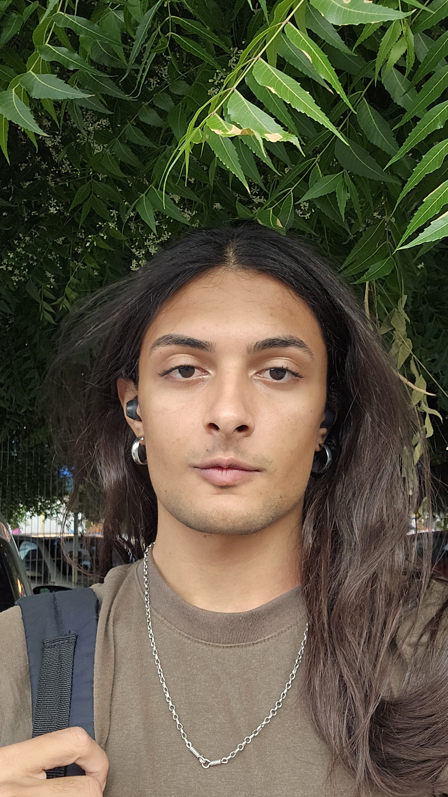
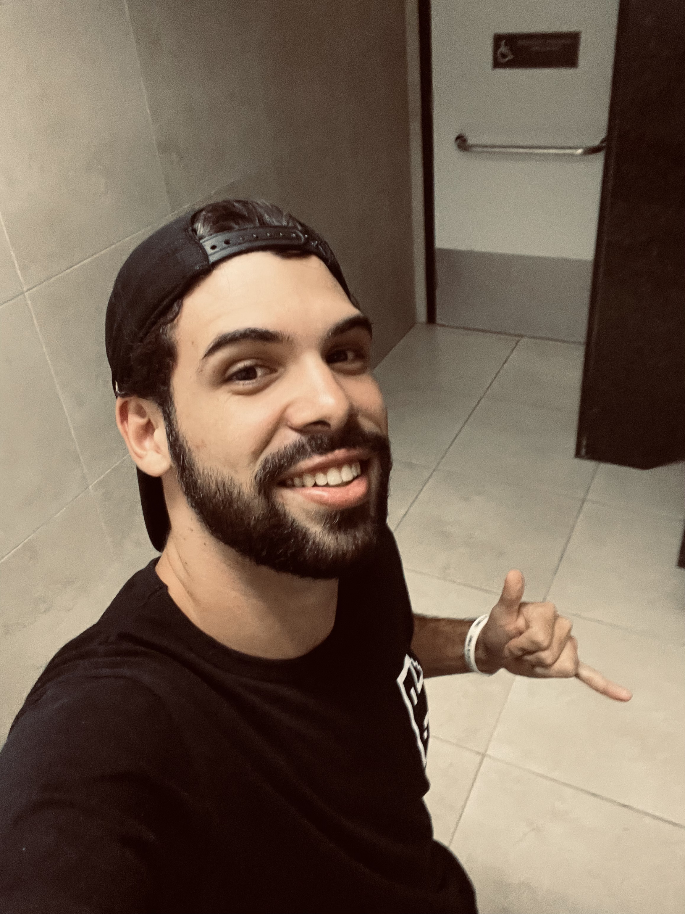

<
Joádson Moreno
Universidade Federal do Ceará
Fazendo parte do BackEnd foi responsável
pela implementação da lógica do código
assim como sua
estrutura.
Wildney Kesney
Universidade Federal do Ceará
Compondo a equipe de FrontEnd, um
dos
responsáveis por desenvolver a tela
principal da aplicação.

Iwiny Andrade
Universidade Federal do Ceará
Fazendo parte do FrontEnd, desenvolveu
o design UI, assim como a prototipação
e html/css.
Luis Felipe
Universidade Federal do Ceará
Desevolvedor BackEnd, responsável
por
fazer a pesquisa das estruturas
assim como da sua implementação em
JS.
